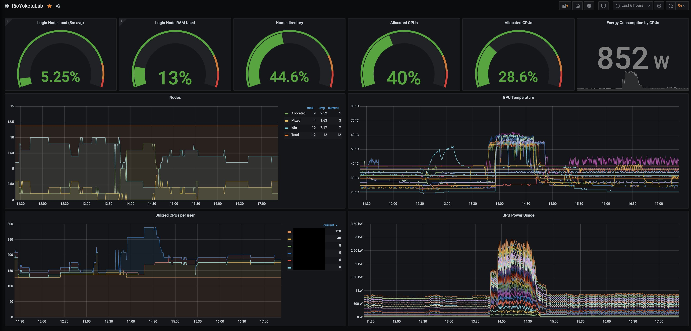

All members of our research group are provided with a laptop, display, keyboard, and mouse. They also have access to many supercomputers, such as:
In addition, a private cluster "Hinadori" is maintained within the lab.
Hinadori Cluster
Hinadori cluster (Hinadori) is designed and operated to provide the latest environments that have yet to be introduced in supercomputers to conduct cutting-edge research within the lab.
Students take the initiative in determining specification, procurement, and operation.
Hardware
To conduct forefront research in HPC and Deep Learning, GPUs are necessary for daily research in Yokota Lab.
Hence, we provide multiple GPU servers (81 GPUs in total):
| CPU | Host memory | GPU (per node) | # of nodes |
|---|---|---|---|
| AMD Ryzen Threadripper 3960X | 128GB | NVIDIA RTX A4500 (2) | 4 |
| AMD EPYC 7402 | 512GB | NVIDIA GeForce RTX 3090 (8) | 1 |
| NVIDIA GeForce RTX 3090 (6) | 1 | ||
| AMD EPYC 7313P | 512GB | NVIDIA GeForce RTX 3090 (4) | 1 |
| AMD EPYC 7313 | 512GB | NVIDIA A100 80GB PCIe (8) | 1 |
| AMD EPYC 7453 | 512GB | NVIDIA RTX A6000 (6) | 1 |
| - | 512GB | NVIDIA RTX 6000 Ada (8) | 1 |
| AMD EPYC 9654 | 384GB | NVIDIA RTX 6000 Ada (2) | 1 |
| Intel Xeon Gold 5418Y | 512GB | NVIDIA GeForce RTX 4090 (8) | 1 |
| NVIDIA GeForce RTX 4090 (7) | 1 | ||
| Intel Xeon Gold 6530 | 512GB | NVIDIA H100 NVL (2) | 1 |
| Intel Xeon Platinum 8570 | 2TB | NVIDIA B200 (8) | 1 |
| Intel Xeon Silver 4514Y | 1TB | NVIDIA RTX PRO 6000 Blackwell (6) | 1 |
| AMD EPYC 7502 | 1TB | - (CPU-only node) | 1 |
Other features of Hinadori include:
- Login node as a bastion for SSH
- NFS file servers with more than 500TB of storage in total
- Private VPN service
(as of 2026.07.05)
These features enable students to conduct experiments remotely.
Hinadori also supports multi-node parallel computing using MPI.


▲Click to enlarge
Software
Job Scheduling System
Hinadori adopts a customized job scheduling system, with Slurm Workload Manager as the base, enabling users to submit jobs effortlessly.
It is equipped with a feature to make easy use of Slurm's ability to assign multiple jobs to a single node.
Monitoring System
Hinadori utilizes Prometheus to aggregate metrics, and Grafana to visualize such metrics.
Metrics that are monitored include the usage rate of each CPU and GPU that can be used for performance optimization and metrics such as usage history, GPU temperature, and power consumption for administration purposes.
All users can access this information via a browser.

Development Environment
Users can specify appropriate versions of CUDA libraries and compilers, which are managed by Environment Modules.
Besides standard applications, Hinadori provides internal applications such as one that records GPU temperature, power consumption, etc., during program execution.
Operation
Operations are done with one simple but important rule: "Don't waste time managing."
As the cluster is operated by students voluntarily, it is essential that we do not cut on research time.
Hence, we have introduced Ansible, a configuration management tool, IPMI, a remote management tool, and LDAP's SaaS for user management, to minimize maintenance time.
Setting up a new node is also automated, and users can start using it within 30 minutes after OS installation.